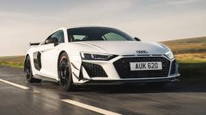

Bmw
Bayerische Motoren Werke Aktiengesellschaft (BMW AG),[4] trading as BMW Group (commonly abbreviated to BMW (German pronunciation: [ˌbeːʔɛmˈveː] ⓘ), sometimes anglicised as Bavarian Motor Works), is a German multinational conglomerate manufacturer of luxury vehicles and motorcycles headquartered in Munich, Germany. The moniker, "BMW ", first came into use when the German firm Rapp Motorenwerke changed its name to Bayerische Motoren Werke GmbH (BMW GmbH) in 1917. Thereafter, in 1922, the name and assets of BMW GmbH were transferred to the aircraft manufacturer Bayerische Flugzeugwerke AG (formerly Otto Flugmaschinenfabrik), thereby giving rise to the company known today as BMW AG.[5][6] BMW AG's automobiles are marketed under the BMW, Mini, and Rolls-Royce brands while its motorcycles are marketed under the BMW Motorrad brand. In 2023, BMW became the world's ninth-largest producer of motor vehicles (with 2,555,341 vehicles made in that year alone)[7] as well as the 6th largest automaker by revenue.[8] In 2023, it was ranked 46th in the Forbes Global 2000.[9] The company also has significant motor-sport history, especially in touring cars, sports cars, and the Isle of Man TT.BMW initially focused on aircraft engine production during World War I, a legacy that influenced the company’s engineering emphasis on performance and precision. Following postwar restrictions on aircraft manufacturing, BMW diversified into motorcycle production in the 1920s and later entered the automobile market, establishing itself as a major player in the automotive industry. BMW AG is headquartered in Munich and produces motor vehicles in Germany, United Kingdom, United States, Brazil, Mexico, South Africa, India, and China.[10] The Quandt family (de) is a long-term shareholder of the company, following investments by the brothers Herbert and Harald Quandt in 1959 which saved BMW from bankruptcy, with remaining shares owned by the public.

Mercedes
Mercedes-Benz (German pronunciation: [mɛʁˌtseːdəs ˈbɛnts, -dɛs -] ⓘ),[6][7][a] commonly referred to simply as Mercedes and occasionally as Benz, is a German automotive brand that was founded in 1926. Mercedes-Benz AG (a subsidiary of the Mercedes-Benz Group, established in 2019) is based in Stuttgart, Baden-Württemberg, Germany.[1] Mercedes-Benz AG manufactures luxury vehicles and light commercial vehicles, all branded under the Mercedes-Benz name. From November 2019 onwards, the production of Mercedes-Benz-branded heavy commercial vehicles (trucks and buses) has been managed by Daimler Truck, which separated from the Mercedes-Benz Group to form an independent entity at the end of 2021. In 2018, Mercedes-Benz became the world’s largest premium vehicle brand, with a sales volume of 2.31 million passenger cars.[8] The roots of the brand trace back to the 1901 Mercedes by Daimler-Motoren-Gesellschaft and the 1886 Benz Patent-Motorwagen and 1894 Benz Velo by Carl Benz, which is widely recognized as the first automobile powered by an internal combustion engine. The brand’s slogan is "The Best or Nothing".[9] History See also: List of companies involved in the Holocaust, Diesel emissions scandal, and History of the automobile Carl Benz (1844–1929) made the 1886 Benz Patent Motorwagen, which is widely regarded as the first automobile. Mercedes-Benz traces its origins to Carl Benz's first internal combustion engine in a car, seen in the Benz Patent-Motorwagen – financed by Bertha Benz's dowry[10] and patented in January 1886[11] – and Gottlieb Daimler and their engineer Wilhelm Maybach's conversion of a stagecoach, with the addition of a petrol engine, introduced later that year. The Mercedes automobile was first marketed in 1901 by Daimler Motoren Gesellschaft (DMG). Emil Jellinek-Mercedes, an Austrian automobile entrepreneur who worked with DMG, registered the trademark in 1902, naming the 1901 Mercedes 35 hp after his daughter Mercedes Jellinek. Jellinek was a businessman and marketing strategist who promoted "horseless" Daimler automobiles among the highest circles of society. At the time, it was a meeting place for the haute volée of France and Europe, especially in winter. His customers included the Rothschild family and other wealthy clients, but as early as 1901, he was selling Mercedes cars in the "New World" as well, including to billionaires Rockefeller, Astor, Morgan, and Taylor. At the Nice race he attended in 1899, Jellinek drove under the pseudonym "Monsieur Mercédès". Many consider that race the birth of Mercedes-Benz as a brand. In 1901, the name "Mercedes" was re-registered by DMG worldwide as a protected trademark. The first Mercedes-Benz branded vehicles were produced in 1926, following the merger of Karl Benz and Gottlieb Daimler's companies into the Daimler-Benz company on 28 June of the same year.[11][12]

Audi
Audi AG[a] is a German automotive manufacturer of luxury vehicles headquartered in Ingolstadt, Bavaria, Germany. A wholly owned subsidiary of the Volkswagen Group, Audi produces vehicles in nine production facilities worldwide. The origins of the company are complex, dating back to the early 20th century and the initial enterprises (Horch and the Audiwerke) founded by engineer August Horch. Two other manufacturers (DKW and Wanderer) also contributed to the foundation of Auto Union in 1932. The modern Audi era began in the 1960s, when Auto Union was acquired by Volkswagen from Daimler-Benz.[7] Volkswagen relaunched the Audi brand with the 1965 introduction of the Audi F103 series, and merged Auto Union with NSU Motorenwerke in 1969, thus creating the present-day form of the company. The company name is based on the Latin translation of the surname of the founder, August Horch. Horch, meaning 'listen', becomes audi in Latin. The four rings of the Audi logo each represent one of four car companies that banded together to create Audi's predecessor company, Auto Union. Audi's slogan is Vorsprung durch Technik, which is translated as 'Progress through Technology'.[8] Audi became a sister to Dr. Ing. h.c. F. Porsche AG (more commonly known as Porsche AG) following Volkswagen Group's 100% acquisition of the latter in 2012, and along with German brands BMW and Mercedes-Benz, is among the best-selling luxury automobile brands in the world.[9] History Birth of the company and its name Automobile company Wanderer was originally established in 1885, later becoming a branch of Audi AG. Another company, NSU, which also later merged into Audi, was founded during this time, and later supplied the chassis for Gottlieb Daimler's four-wheeler.[10] On 14 November 1899, August Horch (1868–1951) established the company A. Horch & Cie. in the Ehrenfeld district of Cologne. In 1902, he moved with his company to Reichenbach im Vogtland. On 10 May 1904, he founded the August Horch & Cie. Motorwagenwerke AG, a joint-stock company in Zwickau (State of Saxony). After troubles with the Horch chief financial officer, August Horch left Motorwagenwerke and founded in Zwickau on 16 July 1909, his second company, the August Horch Automobilwerke GmbH. His former partners sued him for trademark infringement. The German Reichsgericht (Supreme Court) in Leipzig,[11] eventually determined that the Horch brand belonged to his former company.[12] 1923 Audi Type E Since August Horch was prohibited from using horch as a trade name in his new car business, he called a meeting with close business friends, Paul and Franz Fikentscher from Zwickau. At the apartment of Franz Fikentscher, they discussed how to come up with a new name for the company. During this meeting, Franz's son was quietly studying Latin in a corner of the room. Several times he looked like he was on the verge of saying something but would just swallow his words and continue working, until he finally blurted out, "Father – audiatur et altera pars... wouldn't it be a good idea to call it audi instead of horch?".[13] Horch in German means 'hark' or 'hear', which is audi in the singular imperative form of audire—'to listen'—in Latin. The idea was enthusiastically accepted by everyone attending the meeting.[14] On 25 April 1910 the Audi Automobilwerke GmbH Zwickau (from 1915 on Audiwerke AG Zwickau) was entered in the company's register of Zwickau registration court.
